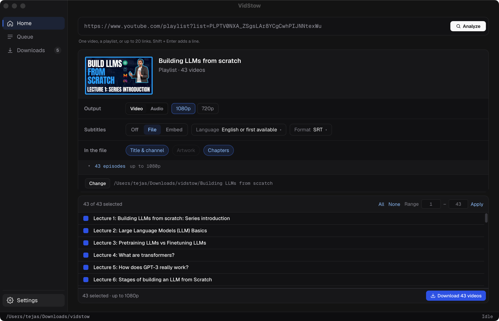

https://www.youtube.com/watch?v=…https://www.youtube.com/watch?v=…
Analysis failedThat video requires sign-in and is not available in this version.
Here's the idea: instead of typing your Google password into VidStow, the app simply borrows the YouTube login you already have in Safari or Chrome. If you never touch anything that needs a sign-in, you'll never notice a thing — and your cookies are never saved, never shown, and only travel alongside that one video's requests.
If you're new here, welcome. VidStow is a small desktop app that saves public YouTube videos onto your own machine — no account, no cloud, nothing phoning home. The whole app is just four places: Home takes links in, Queue shows what's downloading right now, Downloads keeps your finished files, and Settings holds your defaults.
Every download works the same way. You paste a link on Home and hit Analyze, and the app looks the video up for you. Then a little panel called the dock offers readable choices — things like 1080p, subtitles as a sidecar file, and title details written into the file itself. Hit Download and it joins the Queue; when it's done you'll find it in Downloads, where Open plays it and Reveal shows it in your file manager.
| Word on this page | What it means |
|---|---|
| Analyze | The lookup step on Home that reads a link and reports title, length, channel, and available outputs before anything is queued. |
| Dock | The panel under the link field with Output, Subtitles, and In the file rows plus the Download button. |
| Queue | Work in progress with live progress, pause, retry, and remove. Completed work leaves for Downloads. |
| Session line | The small proposed label under the link field naming which browser session a check uses, so signed-in checks never look silent. |
| Browser session | Your existing YouTube login inside Safari or Chrome. VidStow borrows it per check and never stores it. |
Picture this: you paste a members-only teaser that your account is allowed to watch. Since you've already picked a browser in Settings, Analyze simply goes with your session — no anonymous attempt first, no error-card dance, no extra click. The dock just appears. You only ever meet the error card when there's nothing configured at all, or when your session genuinely couldn't open the video.
You sign in exactly where you always sign in. Open Safari or Chrome, sign in to YouTube there like normal, then come back to VidStow's Settings and pick that browser from a single dropdown. There's deliberately no test button — the next signed-in lookup is the test. On a Mac, Chrome might pop up its usual Keychain prompt at that moment — that's expected, just approve it.
From there, it's the VidStow you already know. The dock shows up with the same Output and Subtitles rows, Download queues the file, Queue shows it moving live, and Downloads keeps the finished row. A small session line under the link field notes it ran signed in — and the status bar at the bottom keeps showing only your folder and speed, exactly like today.

4K does it all inside the app. There's a Log In button in its control panel that pops open a Google window — one Google often mistakes for an iPad, complete with the occasional CAPTCHA or second-factor check. Once you're in, 4K can grab age-restricted clips plus your Liked videos, Watch Later, Premium stuff, and any private playlists your account can already watch.
Handy, but it comes with baggage. Private downloads are a paid 4K feature, your session lives inside 4K itself, and suddenly logout handling and background behavior are all 4K's problems. VidStow can get most of that value without taking on any of it, just by reading the browser you already trust.
| Behavior | 4K | This proposal |
|---|---|---|
| Where you sign in | Inside 4K, seen as an iPad | In Safari or Chrome itself, then VidStow borrows that session |
| What gets stored | Session inside 4K | Only the browser name and profile — never the cookies |
| Unlocks | Age-restricted, Liked, Watch Later, private you can watch, Premium | Same set on YouTube only, gated by the scope choice in section 10 |
| Channels, live, other sites | Supported in 4K | Stay out, as the VidStow brief already says |
What follows is the whole change, surface by surface. Every window below reuses the shipping markup, styles, icons, and type — the only new things are the proposed rows, labels, and buttons. Each diff puts today's app on the left and the feature on the right, and everything here follows the recommended answers from section 10.
One link, end to end, in the order a newcomer meets it. Frames 1 and 2 are today's windows untouched; 3 through 6 carry the feature, and 7 is today's Queue with a single extra word in the file line. Artwork boxes stay dark here — in the app they fill with the video's own thumbnail from YouTube.
One video, a playlist, or up to 20 links. Shift + Enter adds a line.
One link, a playlist, or a handful — the link decides.Try
One video, a playlist, or up to 20 links. Shift + Enter adds a line.
One video, a playlist, or up to 20 links. Shift + Enter adds a line.
One video, a playlist, or up to 20 links. Shift + Enter adds a line.
Signed in via Chrome · Default.
1 of 2 slots in use
The new group lands between Video files and Advanced, built from the same label-plus-control rows as everything around it, and it saves the moment you touch it like every other row. The excerpt shows the real General group above it so you can see exactly where it sits.
Video files · Performance · Advanced · Diagnostics continue below.
Video files · Performance · Advanced · Diagnostics continue unchanged below — only this group is new.
The card keeps its real bones — bold title, message line, then buttons. Only the sign-in case gets special treatment with its own title and a way forward. And when no session is picked, the signed-out window is pixel-for-pixel today's window: nothing extra appears.
One video, a playlist, or up to 20 links. Shift + Enter adds a line.
One video, a playlist, or up to 20 links. Shift + Enter adds a line.
Interactive — press Try again to watch one signed-in check fail honestly. (When the session works, this card never appears — the dock does.) Open Settings jumps to the group above.
A signed-in failure keeps the familiar inspector — the small caps label, the title, the file line, the failure card with its evidence, and then the row's authorized buttons. Only three things change: the card's wording, which button gets to go first, and one brand-new button. The row over on the left follows along, since the little recovery button beside a failed row always mirrors whatever leads in the inspector. It's full width here so the 300px inspector keeps its real-world proportions.
No active downloads · 1 failed
No active downloads · 1 failed
Interactive — press Open Settings to jump to Diff A above. The file line gains the session name only under the recommended Retry answer.
Just one row from the batch review list, with the same grid and the same chip in both states. The only thing that changes is the reason written under a failed line — the chip, the summary counts, and the footer buttons stay exactly as they are.
Playlist episode rows are deliberately untouched: a video you can't reach stays dimmed with its Unavailable note until a signed-in re-check makes it available. So there's nothing new to mock there.
If all those buttons blur together, this table is for you. And to be clear: the Before window is quoted straight from the shipping code, nothing tidied up. Every button you see is one the backend personally authorized for that row — and the seeming duplicate is on purpose, a shortcut beside the row that always mirrors whatever leads inside the inspector, so you can fire it without opening anything.
| Button | What it does | Before · main | After · this feature |
|---|---|---|---|
| Retry | Attempts the same download again with the row's own options | Secondary — retrying signed-out rarely helps | Leads, full width — reuses the recorded browser session |
| Open Settings | Leaves Queue for the Signed-in downloads group | Absent | New, beside Retry |
| Open source | Opens the YouTube page in a browser to check it by eye | Leads, full width — today a refused download is usually checked, not fixed, in app | Demoted to an ordinary button |
| Copy link | Copies the source link for pasting elsewhere | Ordinary button | Unchanged |
| Remove | Forgets the queue entry; files on disk stay untouched | Quiet, right aligned | Unchanged |
For the record, here is every string changing hands, quoted word for word. The backend keys stay put — only the human-readable text is new.
| Surface | Before | After |
|---|---|---|
| Home card title Home.svelte mapping | Could not read this link | This video needs your YouTube sign-in. |
| Home card message keyed sign-in error | That video requires sign-in and is not available in this version. | Sign in to YouTube in your browser, pick that browser in Settings, then try again. Only videos your account can already watch. |
| Home card, session failed keyed sign-in error | — new — | This video isn't available to your account. |
| Home message, session failed | — new — | Your browser session tried, and YouTube still said no. Double-check the link, or sign in somewhere else and update Settings. |
| Session line | — new — | Signed in via Chrome · Default. |
| Queue card heading queue.failure.authentication_required | Download was refused | This download needs sign-in. |
| Queue card message | The page may still play in a browser. Try again. | Sign in to YouTube in your browser, pick that browser in Settings, then retry this item. |
| Queue recommended action | Retry this item. | Retry reuses the same browser session. |
| Queue lead button recoveryAction | Open source | Retry, with a new Open Settings beside it |
| Batch line reason friendlyAnalyzeError | That video requires sign-in and is not available in this version. | Needs sign-in. Pick a browser in Settings, then review again. |
| Failure details | extraction · authentication_required · time | Unchanged |
Nothing lingers — that's the whole point. A single-video lookup, a playlist lookup, the per-link checks inside a batch, and the download run itself each get the same two engine values, good for that one attempt only. And if a stale plan forces Download to re-run its lookup first, that refresh quietly reuses the same choice rather than flipping you back to signed-out mid-flight. Settings remembers just the browser's name and the cookie file's path — neither of which is a secret — while the cookies themselves live and die inside that single engine call.
Retry plays fair, too. If the per-job memory answer wins, each Queue row writes down which browser choice its attempt used, so a signed-in retry repeats the same session instead of quietly falling back to anonymous. Leave Settings on Off and every check stays public until you say otherwise — and the status bar down below keeps showing nothing but your folder and your speed.
No passwords ever touch VidStow, there's no session vault to guard, and the engine's importer already handles the careful snapshot-and-redact dance.
An embedded Google window plus a stored session — and with it, logout screens to design and background refresh rules to argue about.
| Content | Needs sign-in | Stance |
|---|---|---|
| Public video, Short, playlist | No | Unchanged — no session needed |
| Age-restricted video you can watch | Yes | Support first |
| Liked, Watch Later, private playlist you can watch | Yes | Support behind the scope choice in section 10 |
| Channel membership item you joined | Yes | Same gate — only what the account can watch |
| DRM rentals, other sites, live, full channels | — | Stay out, as the brief already says |
| Platform | Browsers that can be read | Watch for |
|---|---|---|
| macOS | Chrome, Firefox, Safari | Keychain prompt for Chrome; Safari uses its own cookie store |
| Linux | Chrome, Chromium, Brave, Firefox | Newer encrypted values need a password provider the app does not guess |
| Windows | Chrome, Chromium, Edge, Brave, Vivaldi, Opera, Firefox | Newest app-bound values may import partially and say so |
One habit worth building: YouTube quietly rotates cookies on open tabs. The reliable move is a calm, quiet profile — or just closing the YouTube tab once you're signed in — which happens to be exactly what the engine docs already suggest. Firefox folks can even name a profile plus a container, like firefox:work::Personal.
| File | Area | Change |
|---|---|---|
| internal/store/store.go | Settings | Add the browser choice and cookie file path with the same text validation as the download folder |
| app.go | AnalyzeURL · AnalyzePlaylist · batch admission | Return a keyed sign-in error instead of a flat string — including the stale-plan refresh path — so Home, batch, and Queue each render their own copy. Attach the configured session to every attempt; on a session-unreadable failure, retry once signed out before reporting. |
| batch.go | Per-line admission | Translate the keyed error into each line's reason string; statuses and counts untouched |
| internal/jobs/jobs.go | Analyze + Download run · Queue copy | Thread the choice into every engine.Request; new Heading, Message, and RecommendedAction for authentication_required; under the recommended Retry answer, record the choice on the row |
| frontend/src/lib/types.ts | Settings shape | Mirror the new fields so the UI and the Go side cannot drift |
| frontend/src/pages/Settings.svelte | Signed-in downloads group | Status echo, browser picker, profile, cookie file — new group, existing row idiom, no Check button in v1 |
| frontend/src/pages/Home.svelte | Error card + session line + batch reason | Map the keyed sign-in error to its own title and two buttons; render the session line whenever a session is configured; batch reason copy |
| frontend/src/lib/lifecycle-ui/QueueOverview.svelte | Failed-row recovery + inspector | recoveryAction returns retry for sign-in failures; new Open Settings button on those rows navigates via the page dispatch |
| PRODUCT.md | Scope | Move bounded sign-in from out of scope to supported, with the DRM and no-storage lines kept |
This is an excerpt to keep things readable — the real struct keeps all nine of its current fields and simply gains two persisted strings. The names below are illustrative; at call time the browser value maps onto the engine's CookiesFromBrowser field. And to be clear: only the browser choice and the file path ever get persisted.
internal/store/store.go — excerpt, after
type Settings struct {
DownloadFolder string `json:"downloadFolder"`
FFmpegPath string `json:"ffmpegPath"`
// … WindowWidth, WindowHeight, DownloadConcurrency, …
// … PerVideoSubfolder, ConfirmBeforeDownload, OutputOptions, …
AutomaticDiagnostics string `json:"automaticDiagnostics"`
BrowserSession string `json:"browserSession"` // e.g. off, chrome, firefox:work
CookieFile string `json:"cookieFile"` // path only, never cookie values
}
// BrowserSession maps onto engine CookiesFromBrowser at call time.before → after: same nine fields, plus two
AutomaticDiagnostics string `json:"automaticDiagnostics"`
+ BrowserSession string `json:"browserSession"` // e.g. off, chrome, firefox:work
+ CookieFile string `json:"cookieFile"` // path only, never cookie values
+// BrowserSession maps onto engine CookiesFromBrowser at call time.Below is the part of the proposal an implementer works from directly: final names, wire formats, and who calls whom. Anything still waiting on section 10 is tagged outright — you'll spot little needs Q1-style markers — so nothing reads as decided before it is.
Two plain strings join the Settings document, validated and persisted exactly like the download folder. The names below are final, not illustrative.
| Field | JSON key | Empty means | Rules |
|---|---|---|---|
| BrowserSession | browserSession | Signed out | Shape browser[:profile][::container], passed straight to the engine's CookiesFromBrowser. The dropdown constrains the browser name; free-typed profiles mirror the engine's own rules — no empty, dot-only, or :/\ characters, containers only with Firefox. |
| CookieFile | cookieFile | No fallback file | Path text only, same length rules as the folder. Existence is deliberately not required at save time — the file might live on a disk that isn't plugged in, and the engine reports that at use time. Needs Q1: hidden entirely if the answer is browser-only. |
No migration needed: absent keys decode to empty, which already means signed out, and older builds ignore keys they don't know. Saves go through the same locked settings path as everything else.
Here's a wrinkle worth knowing: Wails hands the frontend nothing but an error string, so "this failed for sign-in reasons" needs a machine-readable shape smuggled inside it. A new error type carries a stable JSON envelope — reason, browser, message — and a small parser reads it back. Anything malformed falls through to today's generic fallback, so old and unexpected errors behave exactly as now.
| Reason | Raised when | Home shows | Batch line shows |
|---|---|---|---|
| signin-required | The video needs an account and the check ran signed out | The dedicated title, message, and two buttons from Diff B | Needs sign-in. Pick a browser in Settings, then review again. |
| session-unreadable | A signed-in check couldn't read the session at all — closed browser, renamed profile, denied Keychain prompt, bad file | Could not read the browser session. Check the browser choice in Settings, then try again — with Open Settings and Try again beside it | Session unreadable. Check the browser choice in Settings, then review again. |
Classification stays on the typed Go error, never on message text, so the diagnostics rulebook needs no changes. The frontend helper lives next to errorMessage, and every Analyze call site checks with it first.
The Manager grows a setter that mirrors the FFmpeg one line for line: mutex-held, future attempts only, in-flight work keeps its snapshot. The app calls it once at startup and again on every settings save. And the rule couldn't be simpler — if a session is configured, every Analyze and every Download run attaches the snapshot, full stop. No anonymous first attempt, no mode flag, no retry dance. The one exception keeps public videos safe: when the failure is the session itself being unreadable — closed browser, renamed profile, denied Keychain prompt, bad file — the attempt goes once more, signed out. Public content still sails through; anything truly gated lands on the session-unreadable card, since that was the actual root cause.
Downloads need no new request fields: starting one simply attaches whatever Settings currently holds, which is harmless on public videos and required on private ones. Playlist lookups, batch children, and the stale-plan refresh all follow the same rule. One caveat to file away: on macOS each fresh browser read can raise its own Keychain prompt until the user approves with Always Allow — the price of spending the session everywhere.
The two failures get deliberately different faces. A video that needs sign-in says so, offering Retry plus the new Open Settings button. A session the app couldn't even read says that instead — the problem is on this Mac, not on YouTube — and leaves out the Open source and Copy link buttons, since the page itself is probably fine and they'd just add clutter. The lead button follows suit both in the inspector and in the little recovery button beside the row, and the evidence details stay exactly as they are.
This one stung a little: the cookie readers live in the engine's internal packages with no public "just verify, don't download" call, so a Check button cannot be built against the public API — anything pretending otherwise would be theater. Version one drops it; the Status line echoes your pick and the next signed-in lookup is the real test. If the engine ever exports a dry-run import, Check comes back as a one-row addition.
Supported gains one line: bounded signed-in YouTube downloads through your own browser session — age-restricted clips and private items your account can already watch. The out-of-scope list loses authenticated downloads and trades its cookies-and-login line for password vaulting, in-app login screens, and access-control circumvention. And the principles gain a sibling for the diagnostics rule: borrowed sessions, never stored — VidStow reads your browser's session per check and keeps nothing but the browser's name. One honest footnote: that scope is enforced by promise and copy, not by pre-filtering, because nothing can reliably tell an age gate from a private video before trying.
Automated tests cover Settings validation (including genuinely sneaky profile strings), keyed-error round trips plus malformed input, classifier cases built from engine error values rather than text, and Queue copy and capability checks for both failure faces — with the frontend's type check and helper unit tests alongside. Then the human pass: every desktop OS against Chrome, Firefox, and Safari or Edge, each tried signed-out, healthy, missing-profile, denied-prompt, and bad-file.
Heads up on shared machines: history shows titles. A private video that downloads just fine will still sit in Downloads and Queue under its private title — worth knowing if anyone else sees your screen. The row keeps its collection label, but never, ever its cookies.
And treat a cookie file like a house key. It holds sessions for every site, not just YouTube, so the picker warns you before accepting one — and clearing the row forgets the path entirely. Diagnostics, Copy diagnostics, and the failure evidence stay redacted exactly as today, gaining no new fields whatsoever.
Signing in buys you no immunity from rate limits. It won't excuse a 43-video admit or a concurrency past 4, and the familiar slow-down wording stays word for word.
And signing in everywhere has two prices worth knowing. Your cookies accompany public checks too — not just the gated ones — and on macOS, Chrome sessions can raise a Keychain prompt per fresh read until you approve with Always Allow. Neither leaks anything anywhere; both are about prompts and principle, and both are why Settings stays one click from Off.
Three open questions stand between this page and a build — the fourth, when to spend the session, is already locked above. Take them one at a time — pick an option, queue the answer, and only what you queued travels back. Flip a radio before pressing the button and all you've changed is your local pick.
Locked: always attach. ✅ Every check spends the session when one is configured; nothing configured, nothing spent. The other two options lost out, for two plain reasons: they keep the feature invisible until something breaks, and they make every gated video pay for two round trips — twice the waiting, twice the chances to fail — on exactly the videos that need the session most. The accepted prices, stated plainly: cookies ride along on public checks too, and macOS may raise Keychain prompts until approved with Always Allow.